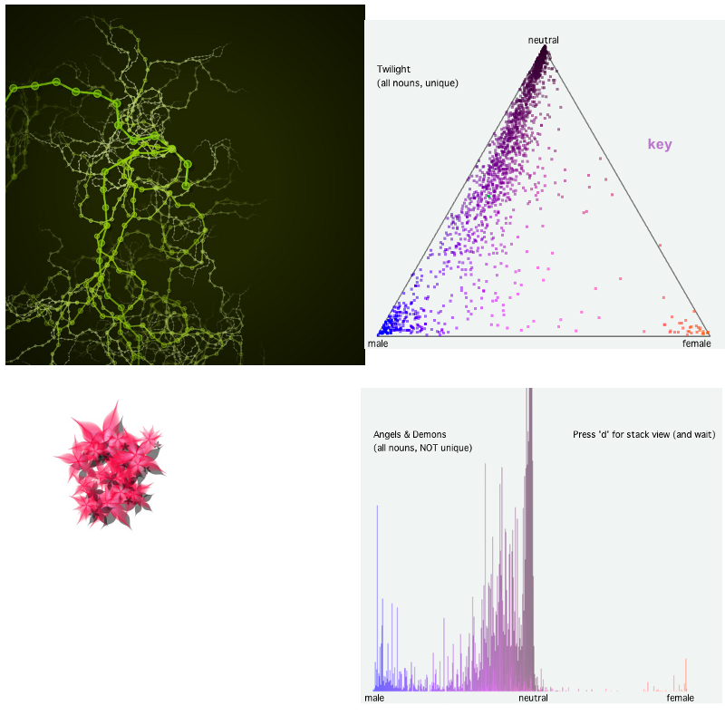

Nodebox
Generate pictures, animation and visualize data in python!
Any examples?
Sure.

Nodebox 1 - write everything in python, run script in Nodebox, get fantastic output
Nodebox understands python but there are some program-specific commands
Short Demo with Nodebox 1!
Nodebox 3 - don't even see code.
It generates python for you, runs it and produces output.
Super powerful, supports many libraries, but not as fun because you can't code it :(
Now lets color Hackbright in all colors of rainbow with Nodebox 3!
Some resources you might want to check out: